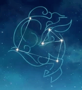
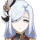

La secretaria del Pabellon Yuehai. La sangre de bestia iluminada Chilin fluye por sus venas.
Artefacto/s recomendados

Atq% / Mestria

Bono cryo

Prob/Daño critico
Prob/Daño critico > Atq% > Maestria
Talentos

Pasivas
Constelación
Armas Recomendadas


Personajes compatibles
